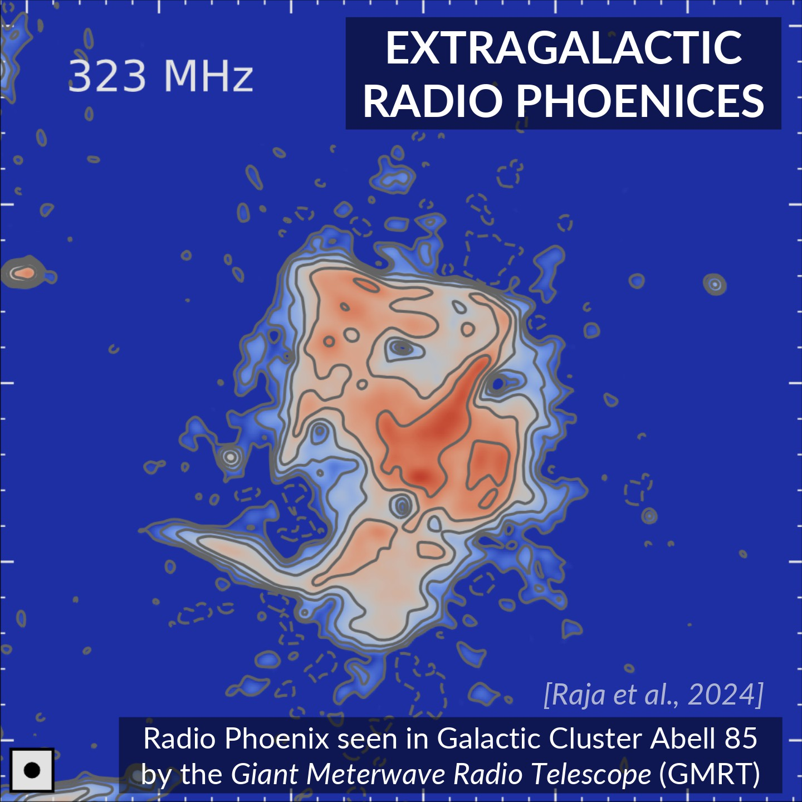
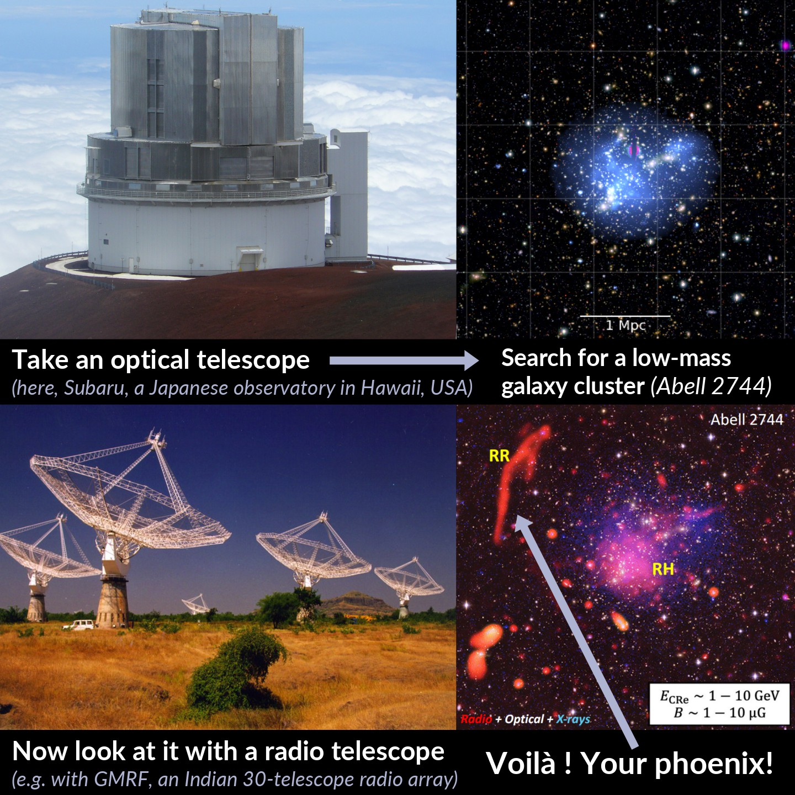
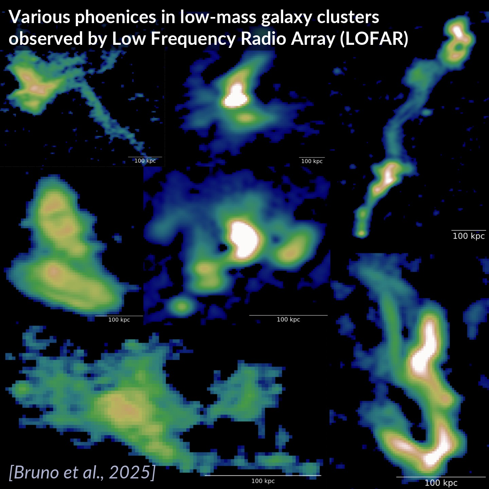
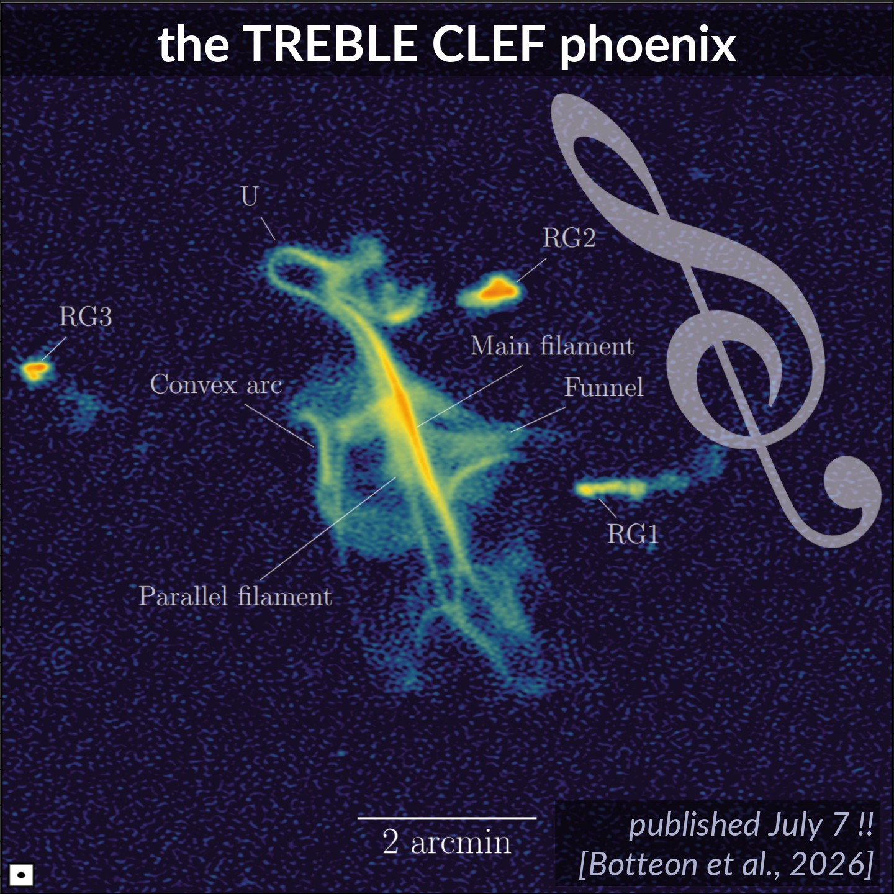
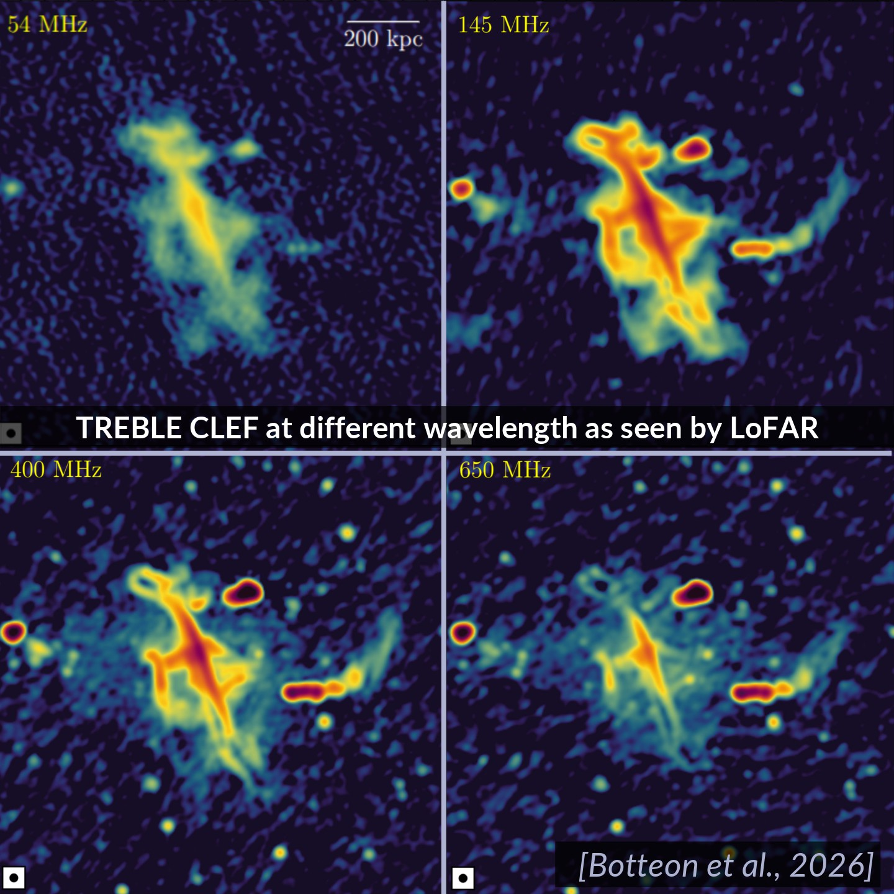
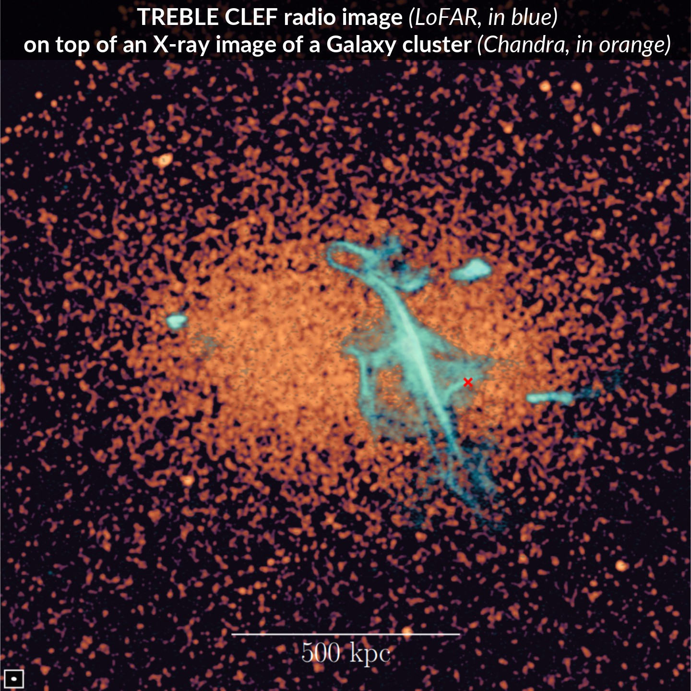
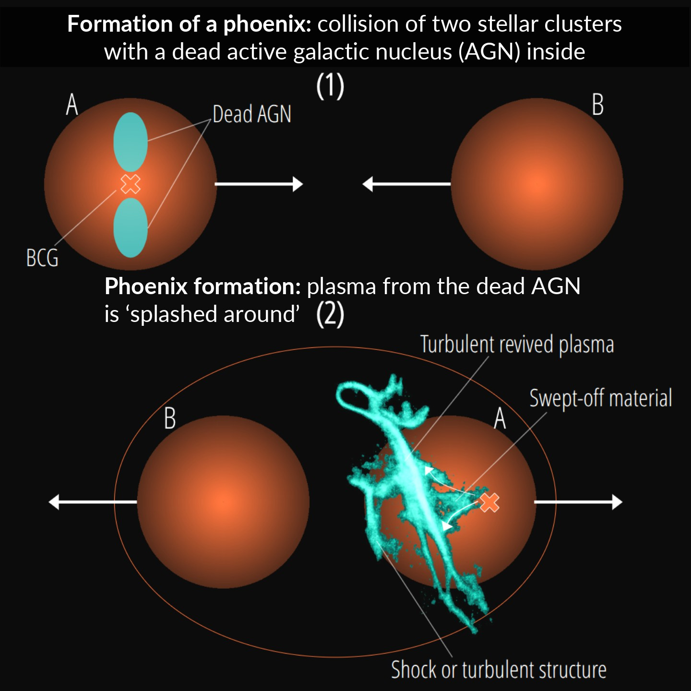

Where and how to find a phoenix?
12 September 2026
While all social media are discussing the scandal surrounding an initial condition for the Navier–Stokes equations, (possibly) constituting a counterexample to one of the Millennium Prize Problems, the mathematical side of the question remains unclear.
Until the situation is clarified, I present to your attention a guide to finding phoenixes! I may return to viscous hydrodynamics after receiving some additional explanations :)


In the figure, we observe an extragalactic phoenix, detected in the radio band by the GMRT telescope. The head, neck, wings, and tail — everything is in place.
How does one find such a phoenix? Where did it come from?
To find a phoenix, one needs to:
- Take images of the sky obtained by optical telescopes.
- Find a small galaxy cluster in these images.
- Point a radio telescope at it and take a careful look.
- The phoenix will most likely be somewhere in the radio image near the cluster.


The picture above shows all these steps. The final image was obtained by combining radio (red), optical (white), and X-ray (blue) images. The bright red phoenix is clearly visible in the upper-left corner.
Applying this procedure to several small clusters, one can find a phoenix in some of them: 7 extragalactic phoenixes are shown in the picture below. An Abell number is indicated if the corresponding cluster belongs to the Abell catalogue — a catalogue containing the brightest galaxy clusters.


The title of the paper from which I took these pictures deserves special attention. The authors proudly write: "Rising from the ashes: a spectral study of seven candidate revived radio remnants in nearby galaxy clusters."
Before explaining the proposed mechanism of phoenix formation, I present a very recent result.
The Treble Clef Phoenix
On July 7, a paper appeared describing an astonishing discovery in a sky survey conducted by the Dutch LoFAR telescope. The authors noticed a bright filament in the radio band, resembling a treble clef in shape (as shown in the first picture). The angular size of the main filament is 6 arcminutes (the angular size of the Moon is approximately 0.5°, or 30 arcminutes). The physical size of the filament exceeds 700 kiloparsecs (the size of the Milky Way is about 20 kpc).


If we look at this phoenix in different spectral bands, it somewhat loses its resemblance to a treble clef (picture below).


The authors also found the galaxy cluster to which the phoenix belongs. For this, they used X-ray measurements from the Chandra telescope. In the third picture, orange shows the sky in X-rays, while blue shows the radio image of the Treble Clef. Using Chandra data, the authors determined the redshift (~0.12), the cluster mass (6 × 10¹⁴ solar masses), and its metallicity.


The "ashes" from which the Treble Clef and other phoenixes have "risen" deserve special attention.
The accepted explanation is the following: one of the galaxies in the cluster was active in the recent past and left clouds of plasma around itself. When two galaxy clusters collide, a shock wave with a complexly shaped front is formed, along which the plasma of the formerly active galaxy becomes "stretched."


The shock-wave front is an accelerator of charged particles. And plasma consists precisely of these particles. Some of the protons (and electrons) take a fraction of the kinetic energy of the macroscopic motion of the front, which becomes the energy of their own microscopic motion. In this way, charged particles are accelerated to high energies and begin to radiate intensely as they move through the local magnetic field.
Since the distances are gigantic, the propagation speed of the front is relatively low; on human timescales, the front barely moves: its evolution takes tens of thousands of years. Therefore, the Treble Clef reproduces the shape of a seemingly frozen wavefront.
It is impossible to experimentally study one particular front and its evolution over time within a (so short!) human lifetime. However, there are thousands of galaxy clusters in the sky, and in some of them we see phoenixes, each reflecting a particular moment in the evolution of the front of a gigantic shock wave.